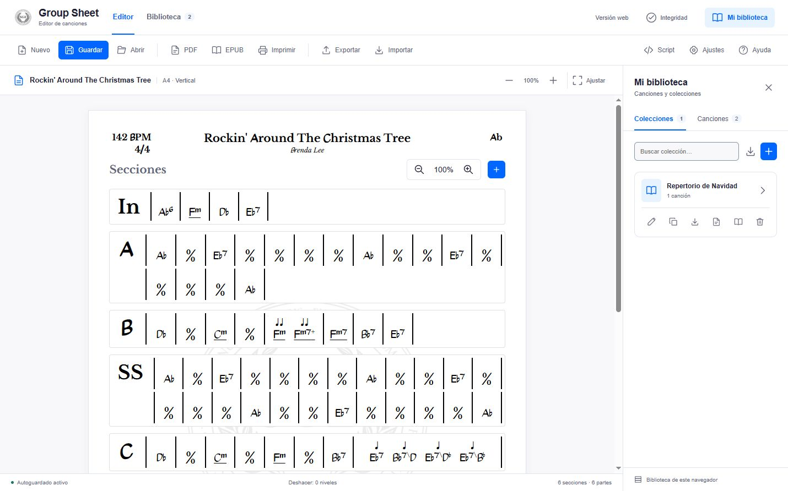
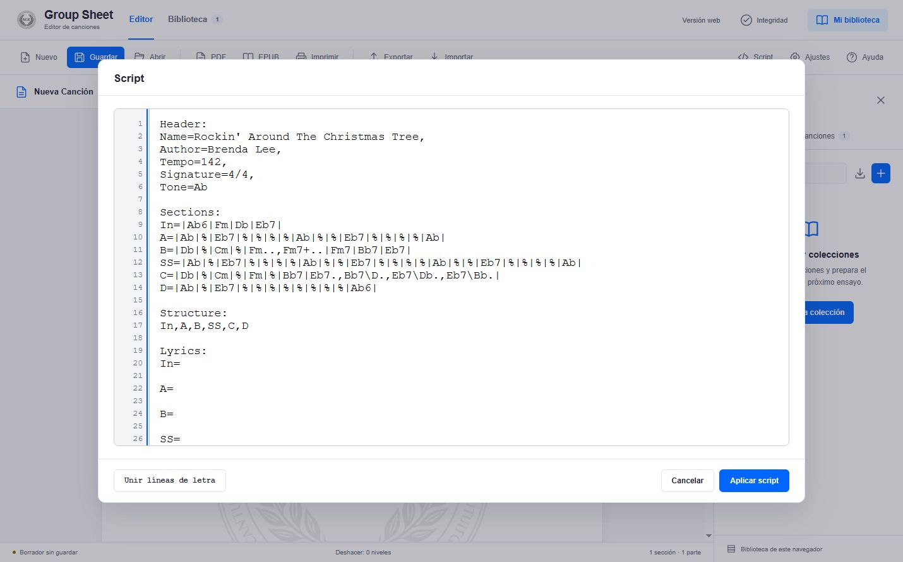
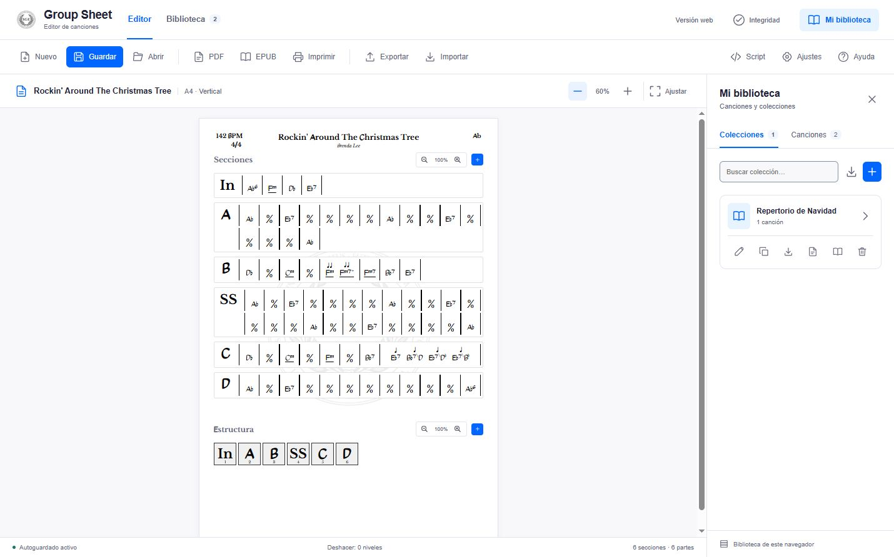
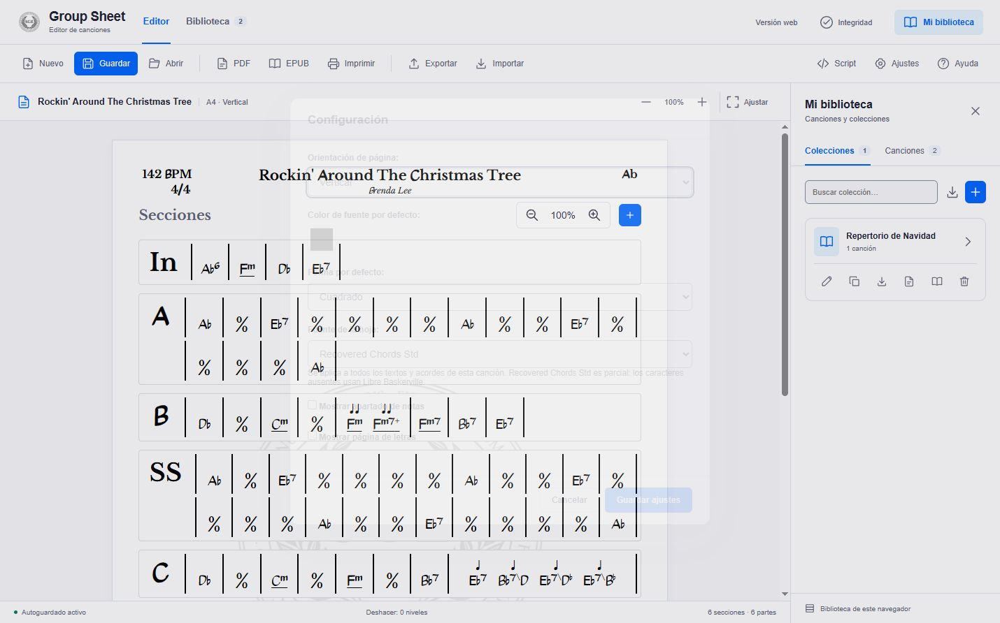
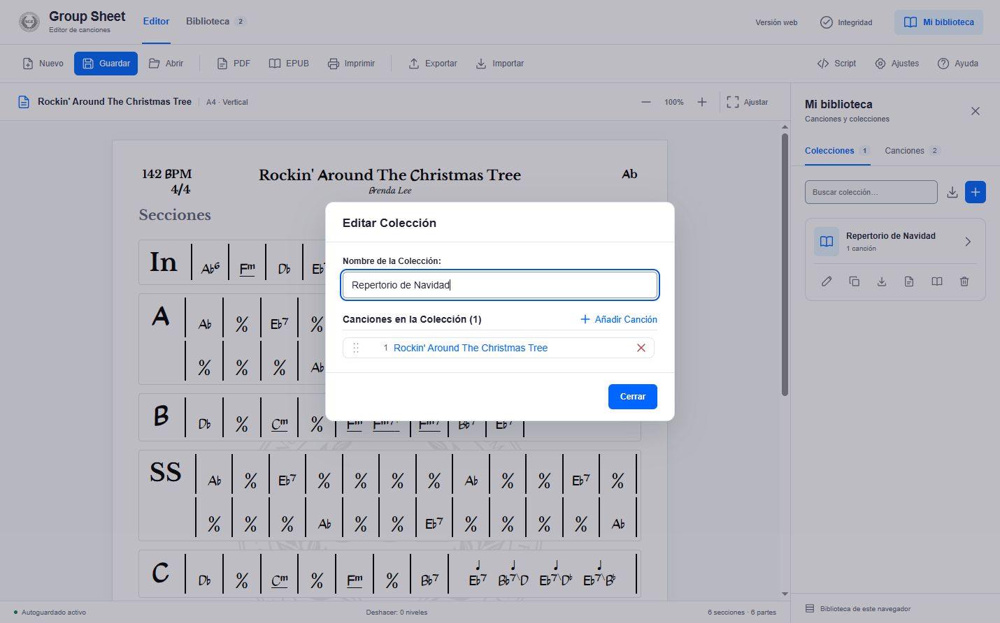
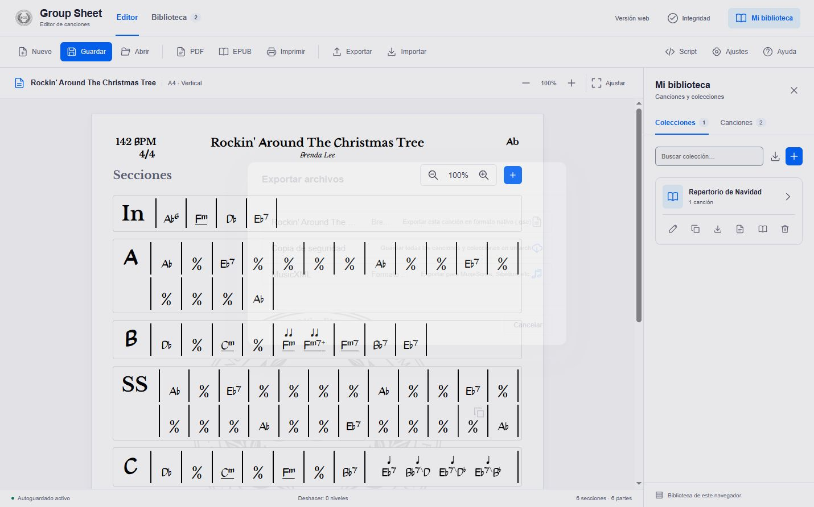

GUÍA DE LA VERSIÓN WEB
Manual de Group Sheet Editor
Crea una hoja de acordes, organiza sus secciones y prepara una colección para el ensayo. Aquí lo hacemos con Rockin’ Around The Christmas Tree.
Acceso en web y escritorio: Ayuda → Abrir el manual con capturas. En escritorio, el manual se abre en una ventana aparte; «Volver al editor» la cierra.
Crear la canción de ejemplo
UN RECORRIDO RÁPIDO
Empieza por una canción
Usa Nuevo para empezar un borrador. Edita sobre la hoja o pega un script.
Pulsa Guardar una primera vez. A partir de ahí, las ediciones de esa canción se guardan automáticamente.
En Mi biblioteca, añade la canción guardada a una colección para preparar tu repertorio.
Exporta a PDF o EPUB, o usa los archivos nativos para seguir editando.
La barra superior reúne los controles de archivo, exportación, Script, Ajustes y Ayuda. El zoom situado encima de la hoja cambia su tamaño en pantalla; Ajustar adapta su anchura al espacio disponible.
EL EJEMPLO COMPLETO
Crea la canción con Script
- Pulsa Nuevo para comenzar un borrador y abre Script en la barra superior.
- Copia el ejemplo, selecciona todo el contenido del editor de scripts y pégalo.
- Pulsa Aplicar script. La cabecera, las seis secciones y su orden aparecerán en la hoja.
- Pulsa Guardar → Guardar canción para incorporarla a tu biblioteca.
Ver el script completo
Header:
Name=Rockin' Around The Christmas Tree,
Author=Brenda Lee,
Tempo=142,
Signature=4/4,
Tone=Ab
Sections:
In=|Ab6|Fm|Db|Eb7|
A=|Ab|%|Eb7|%|%|%|%|Ab|%|%|Eb7|%|%|%|%|Ab|
B=|Db|%|Cm|%|Fm..,Fm7+..|Fm7|Bb7|Eb7|
SS=|Ab|%|Eb7|%|%|%|%|Ab|%|%|Eb7|%|%|%|%|Ab|%|%|Eb7|%|%|%|%|Ab|
C=|Db|%|Cm|%|Fm|%|Bb7|Eb7.,Bb7\D.,Eb7\Db.,Eb7\Bb.|
D=|Ab|%|Eb7|%|%|%|%|%|%|%|%|Ab6|
Structure:
In,A,B,SS,C,D
Lyrics:
In=
A=
B=
SS=
C=
D=
Qué significa cada bloque
Header:- Define
Name,Author,Tempo,SignatureyTone. Sections:- Asigna un identificador a los compases de cada sección. Por ejemplo,
In=|Ab6|Fm|Db|Eb7|. Structure:- Enumera las secciones en orden de interpretación. Repite un identificador para volver a tocar esa sección.
Lyrics:- Asocia texto a cada aparición de una sección. Las seis entradas del ejemplo están vacías de forma intencionada.
Símbolos y duraciones
| Símbolo | Uso | Ejemplo |
|---|---|---|
| | Delimita un compás. | |Ab6|Fm| |
% | Repite el compás anterior. | |Db|%| |
, | Separa acordes dentro de un compás. | |Fm..,Fm7+..| |
| Sin puntos | Redonda: cuatro tiempos en 4/4. | Ab6 |
.. | Blanca: dos tiempos. | Fm.. |
. | Negra: un tiempo. | Eb7. |
... | Blanca con puntillo: tres tiempos. | Ab... |
_ | Silencio; admite los mismos puntos de duración. | |_| o |Ab.,_...| |
/ | Como elemento independiente, inserta un salto de línea visual. | In,A,/,B,SS,C,D en Structure |
xN | Indica vueltas al final de una sección. | In=|Ab6|Fm|Db|Eb7|x2 |
/ o \ en un acorde | Escribe el bajo junto al acorde. El ejemplo conserva la contrabarra original. | Bb7\D. |
En 4/4, las duraciones de los acordes y silencios de cada compás deben sumar cuatro tiempos. Fm..,Fm7+.. son dos blancas; el último compás de C contiene cuatro negras.
Si hay un error de sintaxis, el editor muestra el mensaje y la línea afectada. Unir líneas de letra sustituye los saltos internos de las letras por separadores /; no cambia los acordes.
TRABAJA SOBRE LA HOJA
Edita los detalles
- Cabecera. Acerca el puntero al título, autor, tempo, compás o tono y pulsa su lápiz de edición.
- Secciones. Usa + junto a «Secciones» para crear una nueva. Selecciona una sección para ver sus herramientas de edición.
- Compases. Selecciona un compás para editar sus acordes y duraciones, copiarlo, insertar otro o eliminarlo con las herramientas de la selección.
- Deshacer. Usa Ctrl + Z fuera de los campos de texto para deshacer cambios registrados. En macOS, usa ⌘ + Z.
El pie de la ventana indica Borrador sin guardar o Autoguardado activo, y el estado de deshacer. Pulsa Abrir o la pestaña Canciones de la biblioteca para recuperar una canción guardada.
ACORDES Y ORDEN DE INTERPRETACIÓN
Una sección, varias apariciones
Secciones contiene los acordes de cada parte. Estructura es el recorrido de la canción: sus casillas indican qué se toca y en qué orden. Repetir una sección reutiliza sus acordes y permite asignarle otra letra.
El ejemplo tiene 72 compases. SS reúne la parte previa al solo y el solo de saxo. Para añadir otra aparición, usa + junto a «Estructura» y elige una sección existente; sus herramientas permiten cambiar el orden y la apariencia.

PERSONALIZA EL DOCUMENTO
Letras, notas y ajustes
En Ajustes puedes elegir la orientación, la fuente de la hoja y la forma y color de los elementos. Activa Mostrar página de letras para editar el texto de cada aparición de la estructura. La letra se presenta en una página separada; no debajo de cada acorde.
También puedes rellenar Lyrics: desde Script. Si una sección aparece dos veces en la estructura, escribe dos entradas con su identificador: se asignarán en ese orden. El ejemplo de Rockin’ no incluye letras, por lo que esos campos empiezan vacíos.
Mostrar apartado de notas añade un espacio para indicaciones de interpretación. Fuente de la hoja se aplica a textos y acordes; los caracteres que faltan en Recovered Chords Std usan Libre Baskerville.

Un borde rojo discontinuo en la hoja vertical indica que el contenido supera el área A4. Revisa la distribución antes de exportar; el zoom general de pantalla solo cambia la vista.
PREPARA EL ENSAYO
Agrupa canciones en colecciones
- Guarda la canción y abre Mi biblioteca → Colecciones.
- Pulsa +, escribe «Repertorio de Navidad» y confirma con Crear colección.
- Abre la colección con su flecha o su lápiz y pulsa Añadir Canción.
- Busca «Rockin» y pulsa Añadir. Puedes arrastrar las canciones para ordenar el repertorio.
- Cierra el diálogo. Los botones de la tarjeta permiten editar, duplicar, exportar o eliminar la colección.

Comprobar colecciones, en la cabecera de la aplicación, muestra las canciones que faltan. Sus identificadores se conservan para recuperar el enlace al importar la canción original. Resuelve las referencias pendientes antes de exportar la colección a .col, PDF o EPUB.
ELIGE EL FORMATO ADECUADO
Exporta y comparte
PDF, EPUB e Imprimir actúan sobre la canción abierta. Exportar ofrece el archivo nativo, la copia de seguridad y MusicXML. Para exportar una colección completa, usa los botones de su tarjeta.
| Formato | Para qué sirve | Cómo abrirlo o importarlo |
|---|---|---|
.gse | Seguir editando una canción con sus datos y ajustes. | Importar → Canción. |
.col | Compartir una colección y sus canciones. | Importar Colección en Mi biblioteca. |
.backup | Transportar o recuperar la biblioteca completa. | Importar → Copia de seguridad. |
| PDF / impresión | Obtener hojas para leer, compartir o imprimir. | Un lector de PDF o una impresora. |
| EPUB | Llevar la canción o colección a un lector compatible. | Una aplicación o dispositivo que admita EPUB. |
| MusicXML | Intercambiar datos musicales con un editor compatible. | MuseScore, Sibelius u otro editor compatible. |

Cuando corresponde, puedes elegir Exportar con letras, Exportar sin letras o Cancelar. Los controles de edición se retiran del documento exportado.
GUARDA Y RECUPERA TU TRABAJO
Tu biblioteca y las dudas habituales
La web guarda tu biblioteca en el almacenamiento local de este navegador y este sitio. No la sincroniza automáticamente con otro navegador, ordenador o con la versión de escritorio.
Usa Exportar → Copia de seguridad para descargar un .backup. Al recuperarlo desde Importar → Copia de seguridad, elige Fusionar bibliotecas para combinar los datos o Reemplazar biblioteca… para sustituirlos tras otra confirmación. Cancelar no modifica la biblioteca.
¿Por qué aparece «Borrador sin guardar»?
La canción todavía no está en tu biblioteca. Pulsa Guardar y confirma su nombre para activar el autoguardado.
¿Por qué no veo mis canciones en otro navegador?
Los datos pertenecen al navegador, perfil y dirección donde los guardaste. Exporta un .backup en el origen e impórtalo en el destino.
¿Por qué la página de letras del ejemplo está vacía?
El script deja vacías las seis entradas de Lyrics. Activa la página en Ajustes y escribe tus textos en ella o en el bloque Lyrics.
¿Por qué algunos caracteres usan otra tipografía?
Recovered Chords Std es parcial. Los caracteres ausentes usan Libre Baskerville. Puedes cambiar la fuente de la hoja en Ajustes.
¿Cómo llevo mi biblioteca a escritorio?
Exporta un .backup desde la web e impórtalo en escritorio. Allí los documentos se guardan en una carpeta de trabajo y puedes configurar copias automáticas.